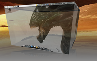

Ubuntu
Archivierte Anleitung
Dieser Artikel wurde archiviert, da er - oder Teile daraus - nur noch unter einer älteren Ubuntu-Version nutzbar ist. Diese Anleitung wird vom Wiki-Team weder auf Richtigkeit überprüft noch anderweitig gepflegt. Zusätzlich wurde der Artikel für weitere Änderungen gesperrt.
 Sammlung von Screenshots - Ubuntu (inkl. Unity)
Sammlung von Screenshots - Ubuntu (inkl. Unity)
Weitere Bildergalerien: Kubuntu, Xubuntu, Lubuntu und *buntu
| Ubuntu | ||||
| Screenshot | Informationen | |||
| Version: | Precise Pangolin 12.04 | |||
| Thema: | Ambiance | |||
| Icons: | Ubuntu Mono Dark | |||
| Wallpaper: | unbekannt | |||
| Anwendungen: | Unity, Steam, Team Fortress 2 | |||
| Anleitung: | Transparenz und Hintergrundbild wurden mit Ubuntu Tweak erstellt | |||
| Version: | Natty Narwhal 11.04 | |||
| Thema: | Simple and clean  | |||
| Icons: | Viele verschiedene, unter anderem Awoken | |||
| Wallpaper: | Sophistication Form | |||
| Anwendungen: | Rhythmbox, Conky, Emerald | |||
| Version: | Natty Narwhal 11.04 | |||
| Thema: | Ambiance | |||
| Icons: | Ubuntu Mono Dark | |||
| Wallpaper: | Mond | |||
| Anwendungen: | Menü, Wetteranzeige, Conky | |||
| Version: | Natty Narwhal 11.04 | |||
| Thema: | Ambiance | |||
| Icons: | Ubuntu Mono Dark | |||
| Wallpaper: | Fabric (aus ubuntu-wallpapers-natty) | |||
| Anwendungen: | Docky | |||
| Version: | Maverick Meerkat 10.10 | |||
| Thema: | Ambiance | |||
| Icons: | Ubuntu Mono Dark | |||
| Wallpaper: | Revolution | |||
| Anwendungen: | Docky, Conky, Screenlets | |||
| Version: | Maverick Meerkat 10.10 | |||
| Thema: | Dust | |||
| Icons: | Humanity Dark | |||
| Wallpaper: | Baustelle | |||
| Anwendungen: | Menü, BeatDetection, Conky | |||
| Version: | Maverick Meerkat 10.10 | |||
| Thema: | Radiance | |||
| Icons: | Ubuntu Mono Dark | |||
| Mauszeiger: | Vorgabezeiger | |||
| Anwendungen: | Dock: Avant Window Navigator; Panel-Objekte: Fehlerhafte Anwendung beenden, Systemmonitor, Augen, Mauszeiger sperren, Platten einbinden, Uhr; Programme: Google Chrome, Gnome-Terminal; im Hintergrund: Emesene. | |||
| Anleitung: | Für die Fensteranordnung (AeroSnap-Klon) der Anleitung auf dieser Seite folgen. Den Avant Window Navigator über das Paket avant-window-navigator installieren. Das Panel über "Rechtsklick -> Eigenschaften -> Hintergrund" transparent machen (die Objekte werden allerdings nicht transparent, sieht ein bisschen blöd aus). Für den Hintergrund "Rechtsklick auf den Desktop -> Hintergrund der Arbeitsfläche ändern -> Hinzufügen" und dann zu /media/windowspartition/windows/web/wallpaper/windows/img0.jpg navigieren. | |||
|  | Version: | Lucid Lynx 10.04 | ||
| Desktop: | GNOME Desktop mit Compiz Fusion (Desktopwürfel in Aktion) | |||
| Thema: | Achromatic Emerald 0.1 | |||
| Icons: | Chrome by coz | |||
| Wallpaper: | Alien Queen by Sk800720 und Iron Sky Concept  | |||
| Version: | Jaunty Jackalope 9.04 | |||
| Desktop: | GNOME Desktop mit Compiz Fusion (swift switcher plugin in Aktion) | |||
| Thema: | Dust | |||
| Icons: | Human | |||
| Mauszeiger: | DMZ (white) | |||
| Wallpaper: | Orions Breath | |||
| Anwendungen: | Gnome-Terminal, Nautilus, Firefox, Bildbetrachter Eye of GNOME | |||
| Version: | Jaunty Jackalope 9.04 | |||
| Thema: | Shiki-Brave | |||
| Icons: | GNOME-Brave | |||
| Mauszeiger: | Vorgabezeiger | |||
| Wallpaper: | Carina Nebula | |||
| Anwendungen: | AWN, Spore (mit Wine), MPlayer, TV-Browser und Google Gadgets | |||
| Version: | Jaunty Jackalope 9.04 | |||
| Thema: | Metal | |||
| Icons: | selbst gemoddete Royale Blue | |||
| Wallpaper: | - | |||
| Anwendungen: | Avant Window Navigator mit selbstgemachten Texticons, Rhythmbox, Screenlets (eigenes Theme für Sensors Screenlet) | |||
| << zurück | vor >> | ||||
- Erstellt mit Inyoka
-
 2004 – 2017 ubuntuusers.de • Einige Rechte vorbehalten
2004 – 2017 ubuntuusers.de • Einige Rechte vorbehalten
Lizenz • Kontakt • Datenschutz • Impressum • Serverstatus -
Serverhousing gespendet von